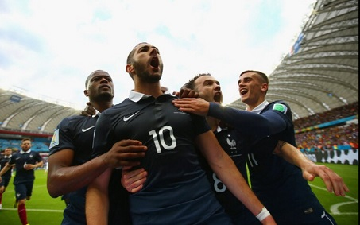

Deschamps: Kabaye will start without injury
Source: Netease Sports
In the early morning of June 21, Beijing time, France will usher in Switzerland, the second opponent of this World Cup group stage. Before the game, Gaul Rooster coach Deschamps attended the regular press conference. At the meeting, the French coach revealed that the midfielder Kabaye will be determined to start because of his injury. When talking about the opponent coach Heathfield, he said he was too unlucky.
 After sweeping Honduras 3-0 in the first game of the group stage, the state-of-the-art French team was unanimously praised by the outside world. However, midfielder Kabaye was replaced by Mavuba due to a groin injury in the game, which made the Gaul Rooster fans a cold sweat. In this regard, Deschamps said that Kabaye's injury is recovering well and will not affect the next game: "Cabaye has recovered well, and no abnormal problems were found in today's training class. He will definitely be able to start the game against Switzerland." The injury is fine, but Deschamps still has a hint of concern: "Although there are only 11 players in the starting lineup, I hope that the rest of the players can maintain a good physical condition and be ready to play at any time."
In the first round of the group stage, the Swiss team in the same group reversed Ecuador 2-1 at the end of the game. Today, the French team will usher in its second opponent Switzerland. Deschamps said: “Obviously, this is a very difficult game. The Swiss team has a strong defensive counterattack ability, and their back line is very stable, leaving the opponents’ The space is very small. There is no doubt that their strength is strong. In the World Cup qualifiers, they only lost 1 game in 10 games. This result is the best proof. Many of their players are from European giants. A big favorite to qualify for the group. In short, Switzerland is a tough opponent, so we can’t take it lightly in this game."
At the same time, Deschamps also talked about the Swiss coach Heathfield, saying that it was too unlucky to meet his mortal enemy: "I was surprised. I didn't expect to meet him in this capacity. He is a great coach because he can It is not easy to lead two different teams to win the Champions League. It can only be said that now I am all to blame for my bad luck." In the 1996 UEFA Champions League final, Deschamps, who played for Juventus, entered the final with the team, but he was unexpectedly upset. Lost to Dortmund, and it was Heathfield who coached Dortmund at the time. In 2001, Deschamps, who had decided to retire formally after the end of the season, followed La Liga's Valencia to enter the Champions League final again. This time Deschamps still failed to win The champion, Bayern defeated Valencia, while the coach of the Bundesliga giants was Heathfield.